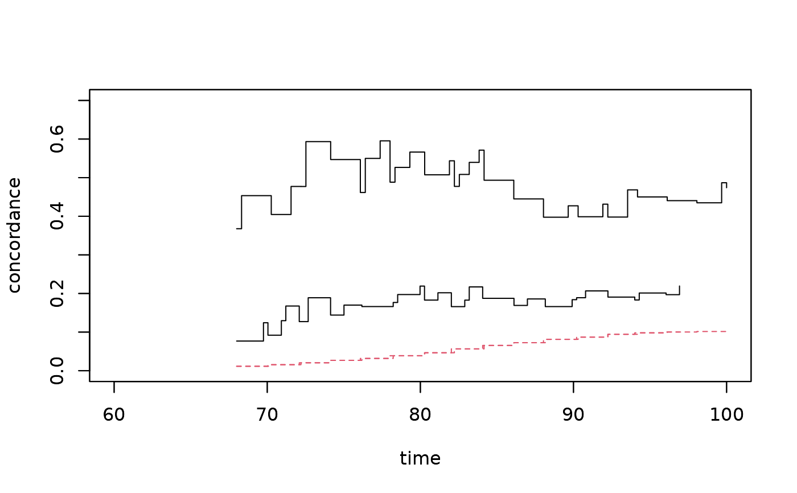

R/casewise.R
casewise.test.RdEstimates the casewise concordance based on Concordance and marginal estimate using timereg and performs test for independence
casewise.test(conc, marg, test = "no-test", p = 0.01)
| conc | Concordance |
|---|---|
| marg | Marginal estimate |
| test | Type of test for independence assumption. "conc" makes test on concordance scale and "case" means a test on the casewise concordance |
| p | check that marginal probability is greater at some point than p |
Uses cluster based conservative standard errors for marginal
Thomas Scheike
## Reduce Ex.Timings library("timereg") data("prt",package="mets"); prt <- prt[which(prt$id %in% sample(unique(prt$id),7500)),] ### marginal cumulative incidence of prostate cancer times <- seq(60,100,by=2) outm <- comp.risk(Event(time,status)~+1,data=prt,cause=2,times=times) cifmz <- predict(outm,X=1,uniform=0,resample.iid=1) cifdz <- predict(outm,X=1,uniform=0,resample.iid=1) ### concordance for MZ and DZ twins cc <- bicomprisk(Event(time,status)~strata(zyg)+id(id), data=prt,cause=c(2,2))#>#>cdz <- cc$model$"DZ" cmz <- cc$model$"MZ" ### To compute casewise cluster argument must be passed on, ### here with a max of 100 to limit comp-time outm <-comp.risk(Event(time,status)~+1,data=prt, cause=2,times=times,max.clust=100) cifmz <-predict(outm,X=1,uniform=0,resample.iid=1) cc <-bicomprisk(Event(time,status)~strata(zyg)+id(id),data=prt, cause=c(2,2),se.clusters=outm$clusters)#>#>cdz <- cc$model$"DZ" cmz <- cc$model$"MZ" cdz <- casewise.test(cdz,cifmz,test="case") ## test based on casewise cmz <- casewise.test(cmz,cifmz,test="conc") ## based on concordance plot(cmz,ylim=c(0,0.7),xlim=c(60,100))slope.process(cdz$casewise[,1],cdz$casewise[,2],iid=cdz$casewise.iid)#> $intercept #> (Intercept) #> 0.1419527 #> #> $slope #> ctime #> 0.02342667 #> #> $se.slope #> (Intercept) ctime #> 0.05903521 0.04361541 #> #> $pval.slope #> ctime #> 0.5911854 #>slope.process(cmz$casewise[,1],cmz$casewise[,2],iid=cmz$casewise.iid)#> $intercept #> (Intercept) #> 0.3889009 #> #> $slope #> ctime #> 0.01579467 #> #> $se.slope #> (Intercept) ctime #> 0.08734016 0.06709847 #> #> $pval.slope #> ctime #> 0.8139019 #>